- 百团大战
- 校级社团
- Ucity简介
- Ucity2014年成就
Ucity校园传媒是华南师范大学学生工作处指导下的实践、创新、培训基地。Ucity校园传媒致力于为广大学子提供各类校园资讯、计算机维修服务及大型校园活动策划实施等。
校园资讯传媒先锋
Ucity.cc作为学生综合信息网，以校园文化为底蕴，走信息媒体及承办策划创新活动中介的路线。基于教育网，面向高校用户，目标是成为外界了解华南师范大学信息的传播窗口。
全面的资讯
Ucity校园传媒作为信息中心，主要提供思想教育栏目、就业指导专题、校园原创等方面的资讯。现已开通： 新闻、专题、维修、社区四个频道。每一栏目都针对学生的需求而设计，随校园文化而互动，Ucity将会在完善现有栏目的同时推出新的栏目，务求做最切合校园生活的资讯，强势打造校园资讯平台。
Ucity源于校园的特性，决定着其浏览量有确切的保证，也决定着其市场前景的可开发性——众多学生消费市场的中介平台。
2001年
(1) 暑假期间首次与SOHU广州分站合作，对第八届全国大学生田径锦标赛进行栏目建设，全程报道，引起学校所有同学的关注，为Ucity的正式发展拉开了序幕。
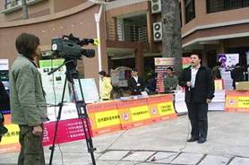
(2) 帮助大学生实现自我增值，引得华师万人空巷的“钟伟文高校巡讲”；
2002年
(1) 轰动各高校的“百事可乐蓝色魅力之旅”；
(2) 关注公益事业，提高Ucity整体形象的“植树义卖活动”；
2003年
(1) 与中影集团和星际艺术传播机构合办的“杜琪峰广州高校研讨会”以及“2003电影节活动”；
(2) 号称华南地区最出色的“第三届冰力先锋乐队选拔赛”；
(3) 校园最TOP的极限运动“七喜FIDO至炫一族挑战营”；
(4) 举校瞩目、堪称活动经典的“UP新势力校园青春热舞大赛”；
(5) 演绎精彩，无限活力的“李宁3vs3不服就单挑的篮球赛”；
2004年
(1) 紧张刺激的2004年广播网络DJ新势力大赛；
(2) 激情狂欢的“舞动冬姿旋律 挥洒华师魅力”百事蓝色圣诞晚会；
(3) 使整个学校掀起一股诚信旋风的《诚信与学风》征文大赛；
2005年
(1) 第三届动感地带街舞大赛,成为全国最佳承办社团
2006年
(1)《天使任务》海选活动，歌星王心凌到华师助兴宣传；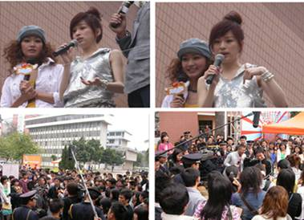
(2) 学风建设月宣传，拍摄了一部寓教于乐的DV宣传片，在各班级中播放，以其幽默的风格获得了同学的关注。
2007年
(1) 跳蚤市场：Ucity在此方面的第一次尝试，虽然是试验性质，但吸引了大量的摊主，火爆的场面甚至吸引了外国朋友来shopping，在华师引起了一阵跳蚤狂潮。
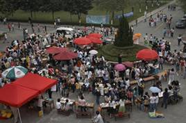
(2) 强生“突破旧世界，舒澈新自我”华师校园秀活动，宣扬了突破自我的创新意识。
(3) 承办康师傅“冰力卡拉风”校园歌唱赛与“鲜の每日C”校际啦啦队对抗赛总决赛，为顶新集团发现了不少优秀的歌手，海选的过程也大大地普及校园歌唱文化，造成了极大的影响力。
(4) 人人网CEO陈一舟“迈出成功的第一步”校园演讲
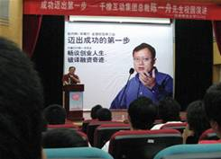
(5) 广东十佳高校网站评选第二名
(6)投资制作了风靡广州各大高校的华师3部校园DV剧：
《女生日记》《What Is Love》《窗口》
《窗口》首映活 动照片：
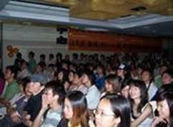
2008年
(1)迪士尼黑色世界新生训练营
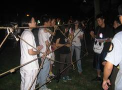
2009年
(1)第7届跳蚤市场开幕。作为Ucity的招牌活动，每学期一次的跳蚤市场迎来第7届
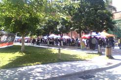
（2）U仔陪你过平安夜
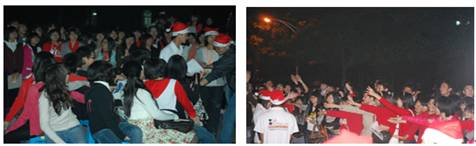
2010年
(1)Free卫生巾布偶比赛
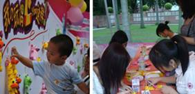
（2）第二届u-style 广州高校街舞battle赛决赛
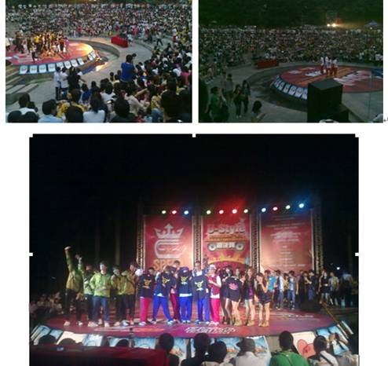
2011年
（1）联通充值活动
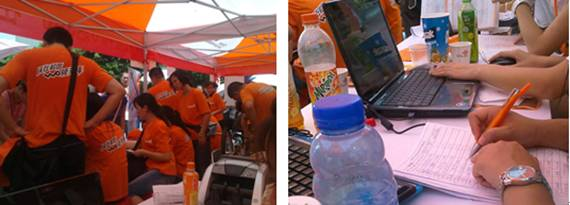
（2）扇子涂鸦设计大赛
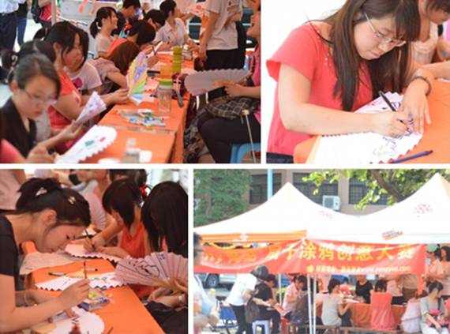
（3）第一届“非橙勿扰”
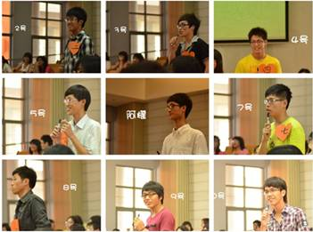
(4）肯德基三早活动
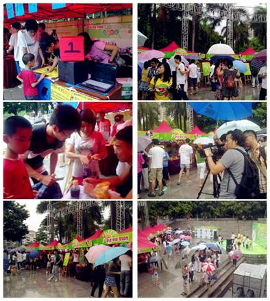
2012年
(1) Ucity突破传统活动，举办了首届的U侦探比赛
(2) 华师校媒诚邀各界的校园媒体交流会
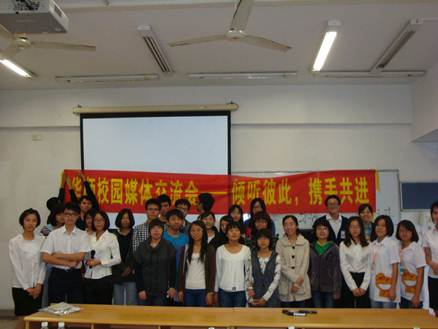
(3) 第六届“花与爱丽丝”展开女生们的TIAN蜜之旅。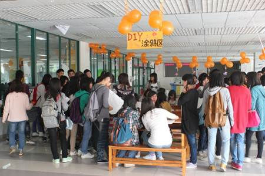
(4) PC开放日与正装资讯展
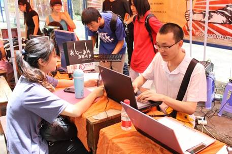
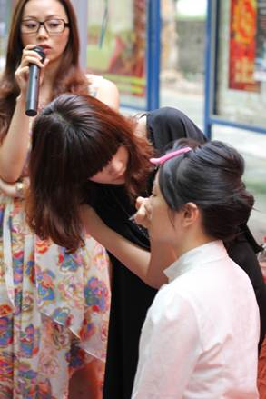
(5) 华师Ucity首届校园媒体展
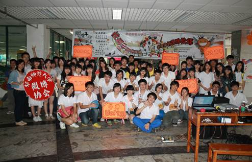
(6) 华师Ucity与朋友网合作，写下你毕业最遗憾的事。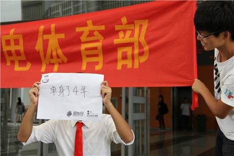
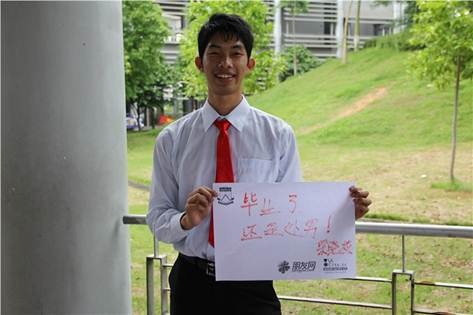
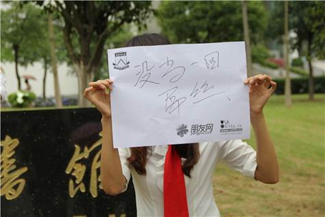
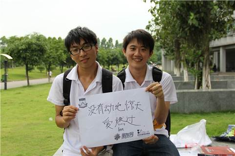
(7) 末日大逃亡
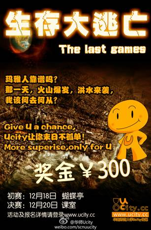
2013年
(1)花与爱丽丝之校意莹莹DIYT恤活动
2014年UCITY成果展
第八届花与爱丽丝之一游未尽游记收集活动
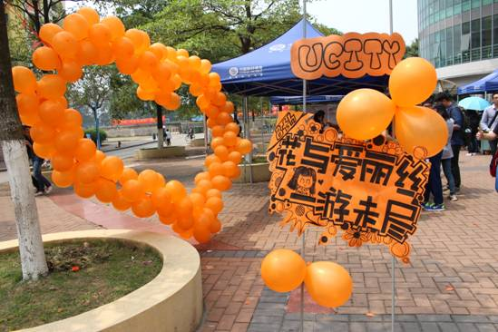
本届花与爱丽丝之一游未尽游记收集活动于3月中旬华丽丽地展开了。活动反响热烈，吸吸引了近二百人报名，共收到作品156份，其中有效作品116份，一、二等奖获奖者还分别获得由Ucity提供的厦门双人三日游和深圳单人两日游免费旅游名额，三等奖也获得Ucity提供的名贵护肤品一份。
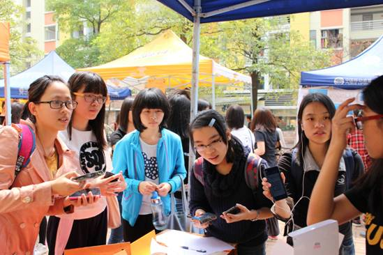
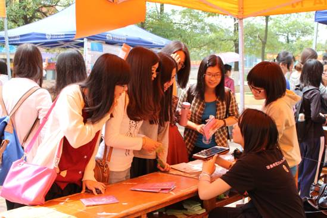
活动第一天，虽然很晒，但也挡不住U仔U女，更挡不住热情的参加者。
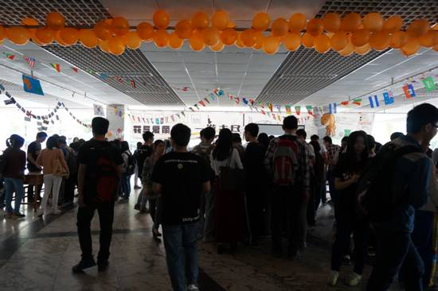
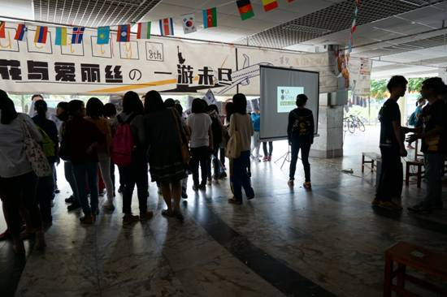
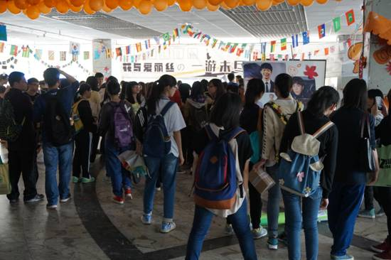
活动第二天，人流一浪接一浪，各个摊位均爆满！
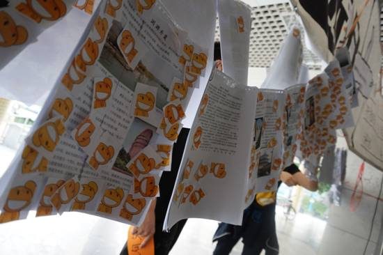
丰硕的成果
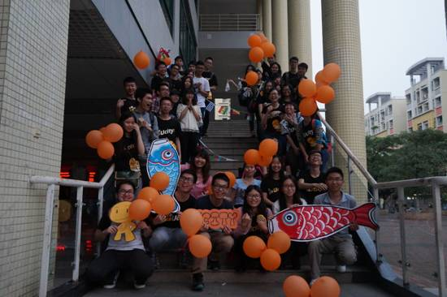
有你就有Ucity

Ucity简介
Ucity校园传媒是华南师范大学学生工作处指导下的实践、创新、培训基地。Ucity校园传媒致力于为广大学子提供各类校园资讯、计算机维修服务及大型校园活动策划实施等······